Article equation gallery
16 selected display equations · 300 DPI · source: _calisma/V5_ICERIK/TESLIM_V5_FINAL_2026-08-17/stoic_hume_package/Stoic_Hume_Formal_Section_2026-08-17/core_section.tex
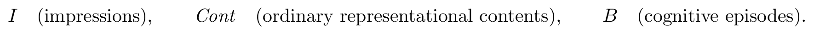
l0-sorts — L0: the three core sortscore_section.tex:58–62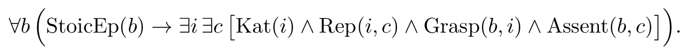
stoic-skeleton — Stoic minimal dependency skeleton (S)core_section.tex:123–137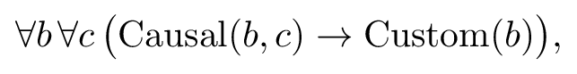
mechanism-m0a — Humean mechanism constraint M0acore_section.tex:155–159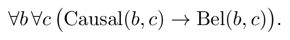
mechanism-m0b — Humean mechanism constraint M0bcore_section.tex:160–164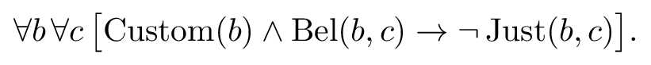
hume-exclusion — Strong exclusion reconstruction (H-I)core_section.tex:174–183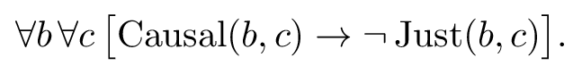
direct-attachment — Direct-attachment reading (T1)core_section.tex:201–209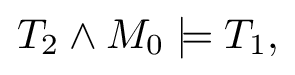
strength-valid — Proposition 1: valid entailmentcore_section.tex:224–226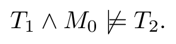
strength-counterexample — Proposition 1: separating countermodelcore_section.tex:228–230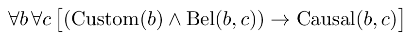
bridge-axiom — Bridge axiom B0core_section.tex:266–274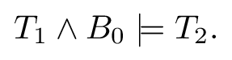
bridge-collapse — Proposition 1: bridge collapsecore_section.tex:282–284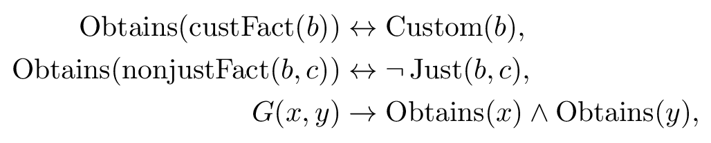
reification-bridges — Reification bridge axioms O1-O3core_section.tex:369–376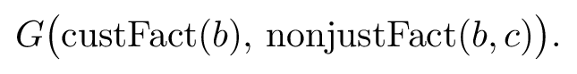
grounding-atom — The grounding atom (G)core_section.tex:383–387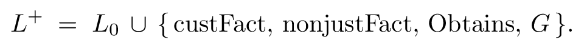
language-enrichment — The enriched language L+core_section.tex:404–410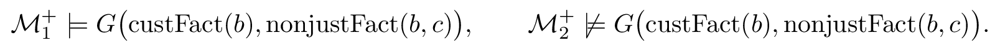
underdetermination — Underdetermination witnesscore_section.tex:465–471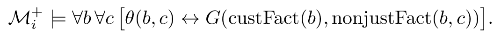
definability-failure — Implicit definability failurecore_section.tex:505–512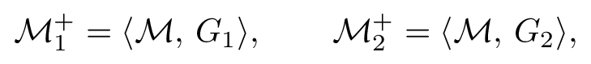
enrichment-pair — Two enrichments with one reductcore_section.tex:478–481